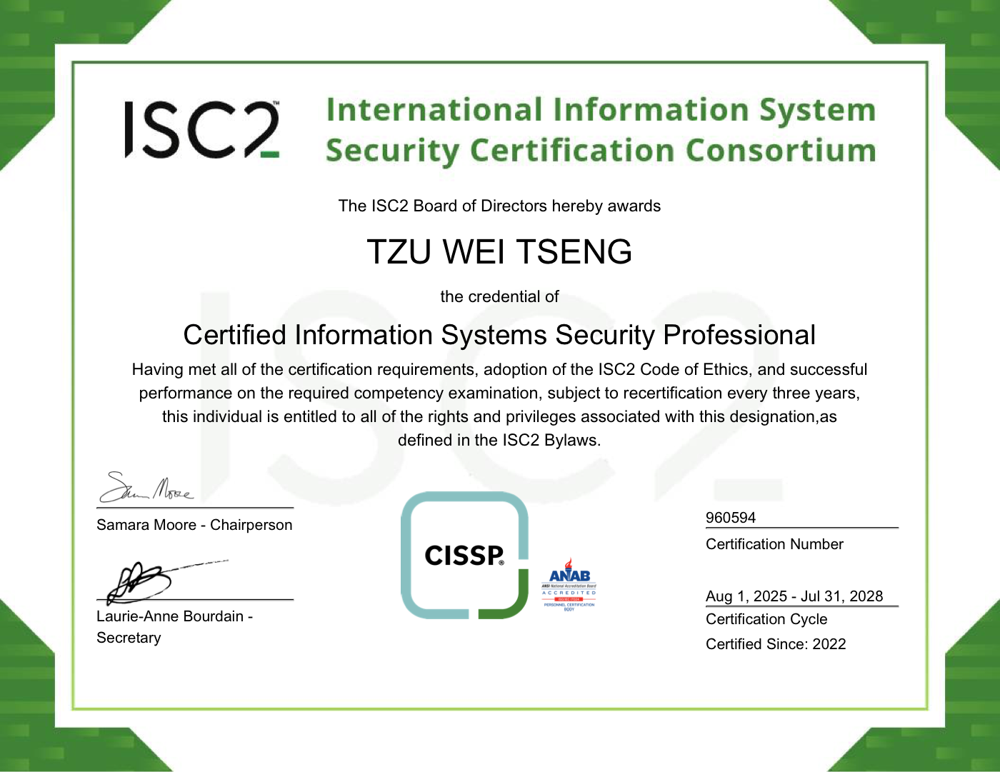
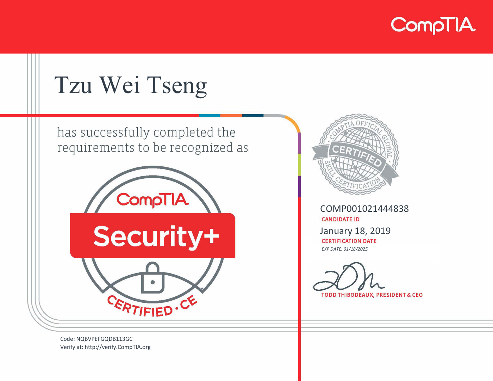
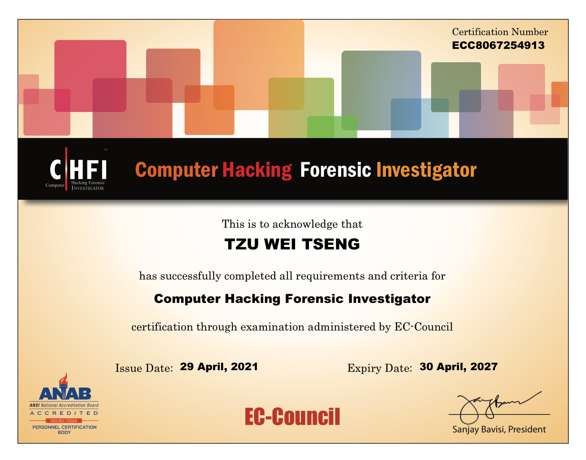
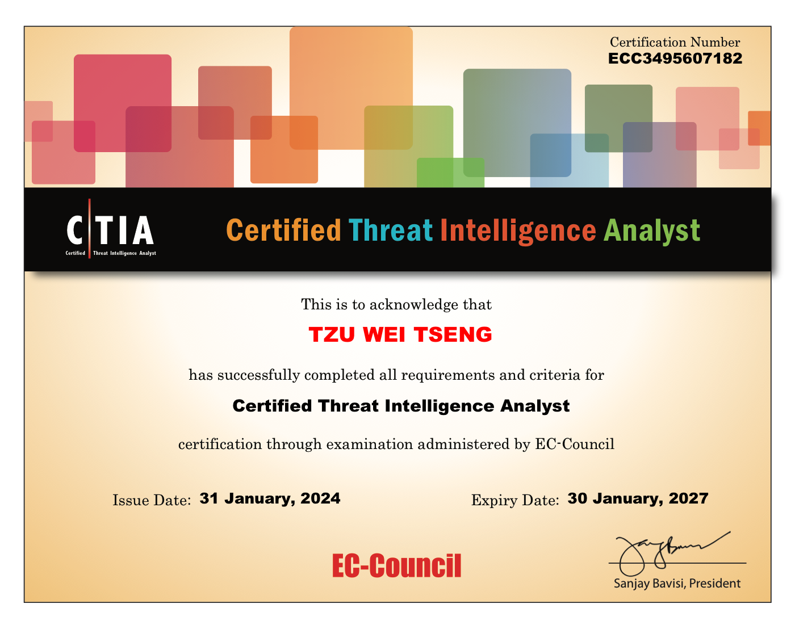
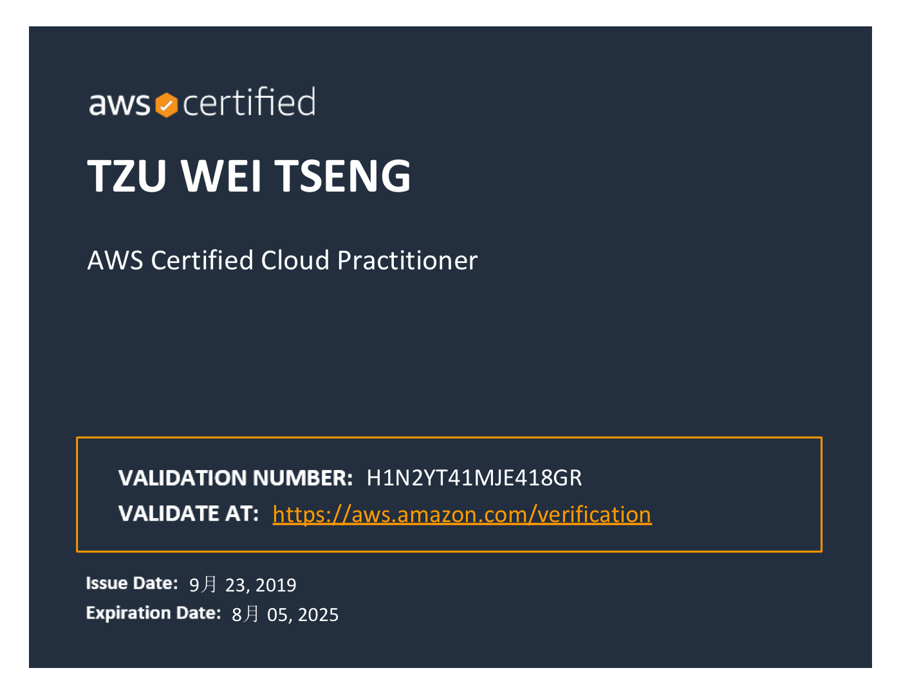
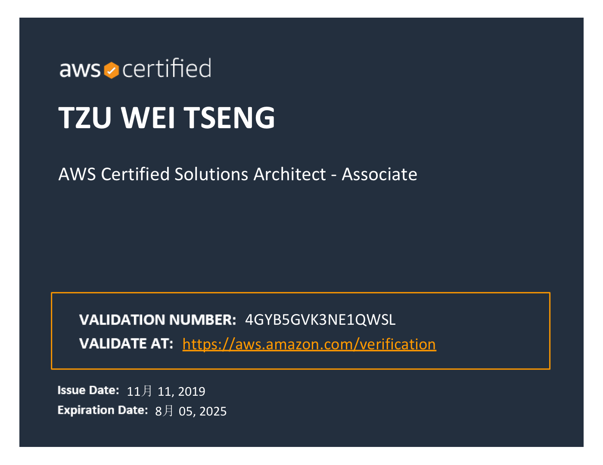
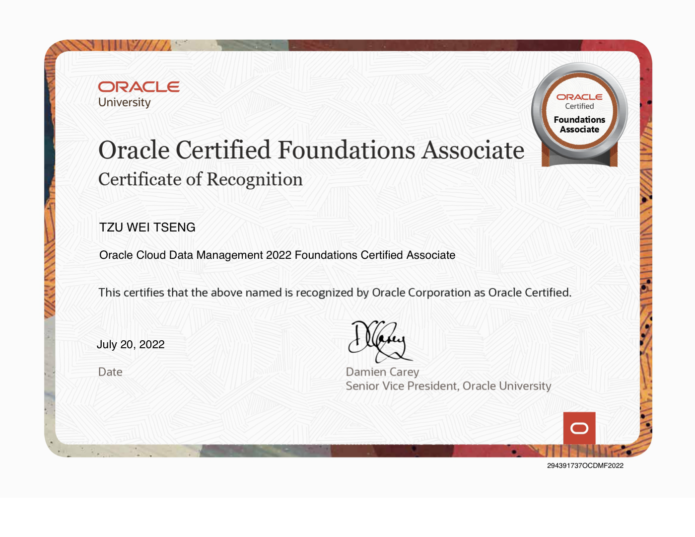

Certification Zone
Dr.William 證照專區
整理 Dr.William 歷年取得之資訊安全、雲端、治理與開發相關專業證照，作為個人技術能力與跨域實務經驗之完整紀錄。
18 份證照
分類展示
PDF 檔案
證照縮圖
Certification Map
證照樹狀架構圖
先看分類，再看層級。這張架構圖把 Dr.William 的證照依照專業領域與難度層次整理，方便快速理解能力版圖。
資訊安全 Security
高階
資訊系統安全專家認證｜CISSP
資安分析師認證｜ECSA
中階
白帽駭客認證｜CEH
電腦鑑識調查分析師｜CHFI
網路威脅情報分析師認證｜CTIA
安全應用程式開發工程師（.NET）
基礎
CompTIA Security+
雲端架構 Cloud
高階
AWS 解決方案架構師（專業級）
AWS 安全性專業認證
中階
AWS 解決方案架構師（副級）
Oracle 雲端資料管理基礎副級認證
Microsoft Azure 開發人員認證｜AZ-204
基礎
AWS 雲端從業人員認證
Azure 雲端基礎認證｜AZ-900
Microsoft 安全性與合規基礎｜SC-900
治理與稽核 Governance
ISO 27001 主導稽核員認證
資訊安全管理系統認證｜ISO 27001:2022
隱私資訊管理系統認證｜ISO 27701
註：難度分級依證照市場辨識度、考試範圍深度與實務門檻做整理，作為網站導覽用途。
Security
資訊安全 / 滲透測試 / 數位鑑識





Cloud
雲端 / 架構 / 平台能力





Governance